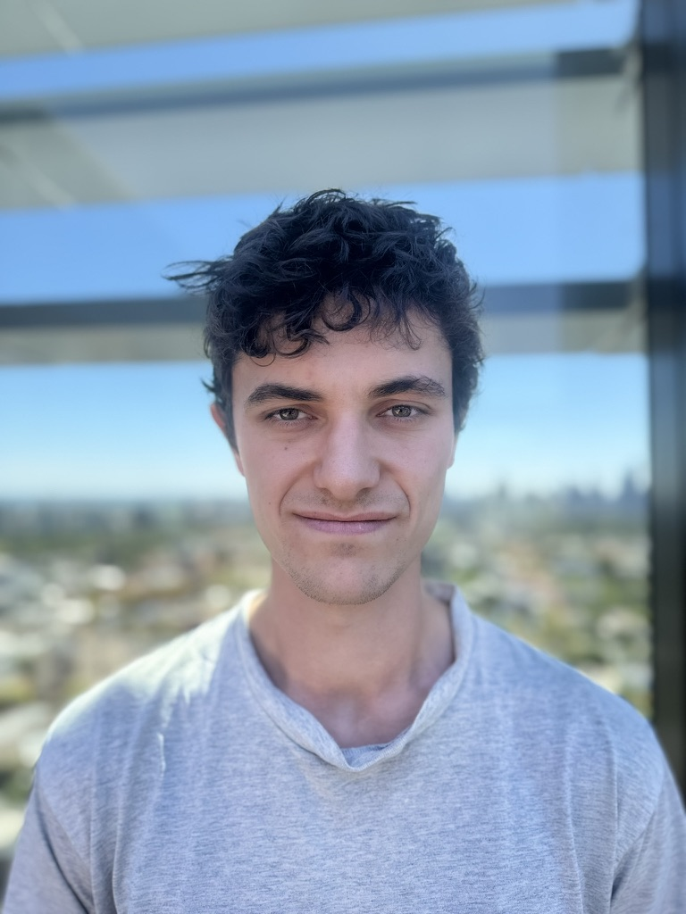
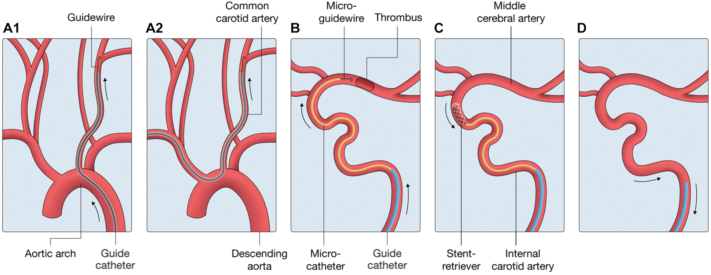
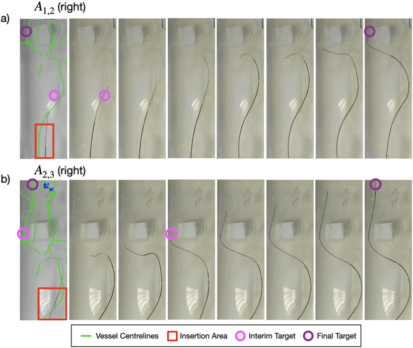
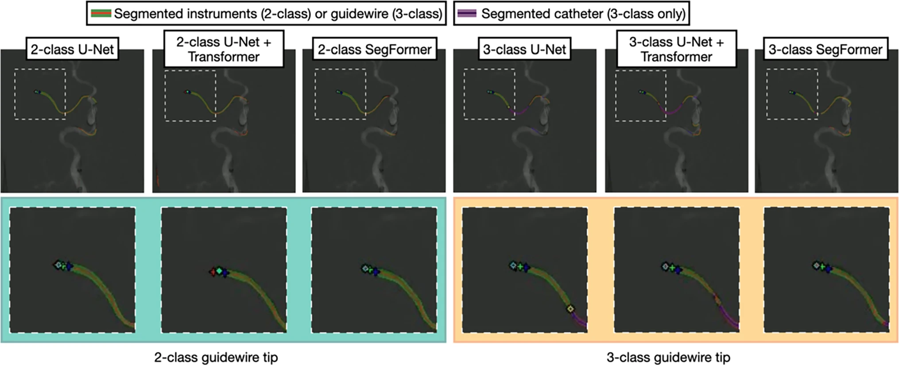
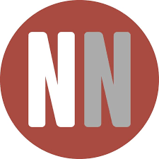

Harry Robertshaw
PhD Researcher at King’s College London developing AI-assisted robotic systems for autonomous endovascular stroke intervention.
I am a final-year PhD researcher in Surgical & Interventional Engineering at King’s College London, working at the intersection of medical robotics, artificial intelligence, and endovascular intervention.
My research focuses on autonomous and AI-assisted robotic systems for mechanical thrombectomy, using reinforcement learning and patient-derived vascular simulation environments to investigate safe robotic navigation through complex cerebrovascular anatomy. I am supervised by Thomas C. Booth and Alejandro Granados.
Selected Publications



Selected Press
